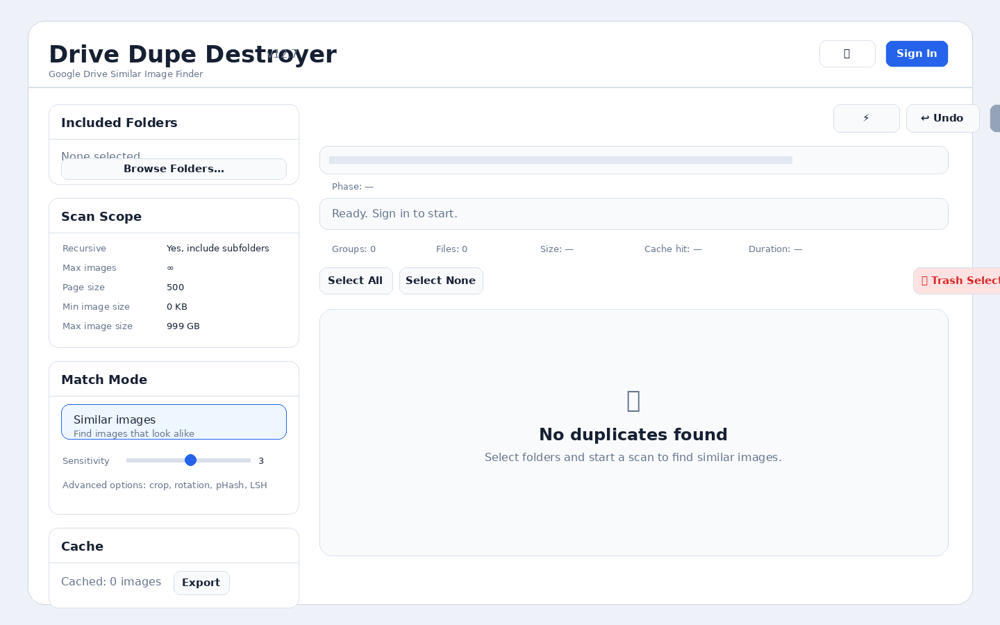
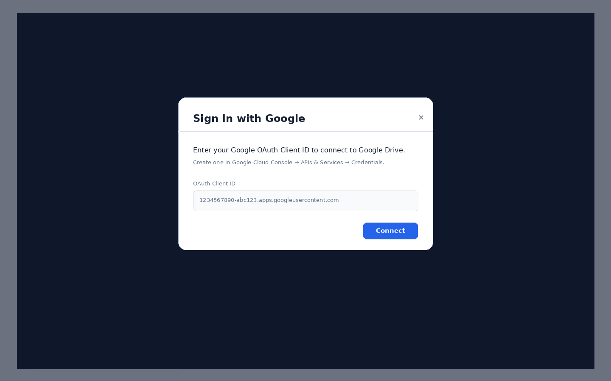
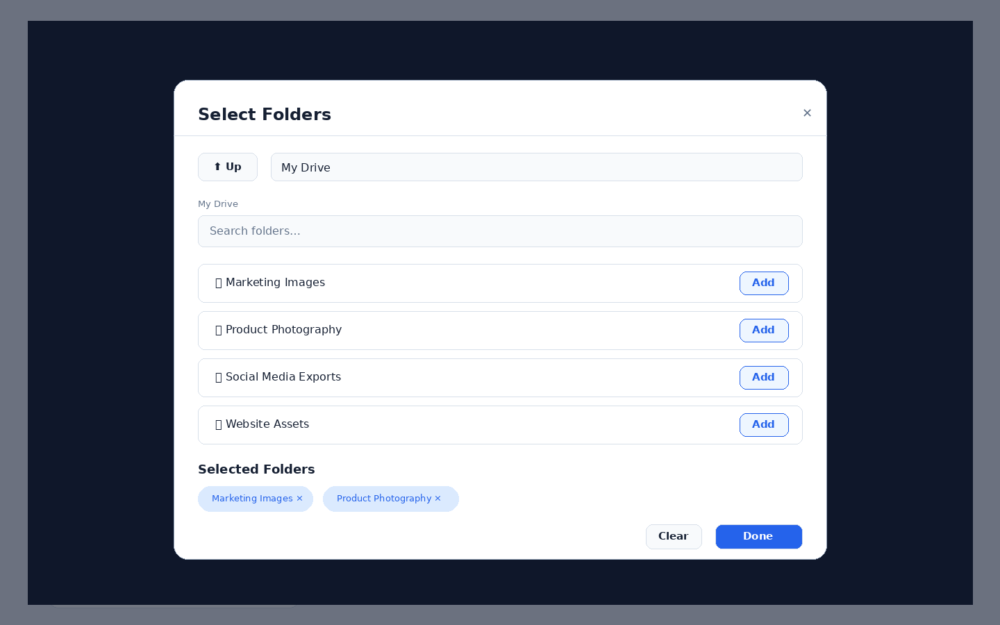
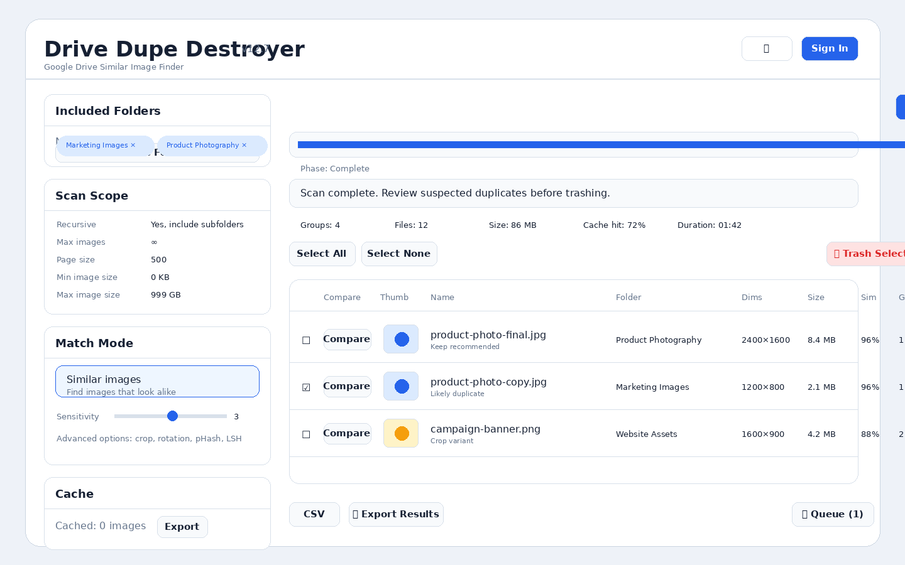
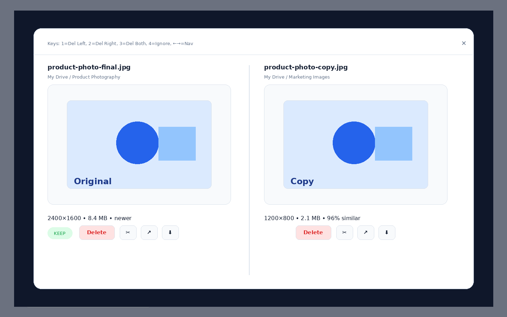

Important: Drive Dupe Destroyer moves files to Google Drive Trash. It does not permanently delete files.
1. Open the app
Run the app locally with python serve_secure.py, then open http://localhost:8080, or open your hosted GitHub Pages URL.

2. Sign in with Google
Click Sign In and enter your Google OAuth Client ID. The Client ID usually ends with .apps.googleusercontent.com.

3. Select folders to scan
Click Browse Folders…, select one or more folders, then click Done. Turn on recursive scanning to include subfolders.

4. Review scan results
After the scan, use the results table to review duplicate groups, similarity scores, folders, dimensions, and file sizes.

5. Compare before trashing
Click Compare to review suspected duplicates side by side. Use the metadata and KEEP badge to decide which file should remain.

Recommended settings
| Setting | Recommended value | Why |
|---|---|---|
| Recursive | Yes | Includes images inside subfolders. |
| Match Mode | Similar images | Finds resized, compressed, renamed, or lightly edited copies. |
| Sensitivity | 3 | Balanced starting point. |
| Cache | On | Speeds up repeat scans. |
Keyboard shortcuts
| Key | Action |
|---|---|
| 1 | Delete left image |
| 2 | Delete right image |
| 3 | Delete both images |
| 4 | Ignore this pair |
| ← / → | Previous or next comparison |
Troubleshooting
| Issue | What to check |
|---|---|
| Sign-in fails | Confirm OAuth Client ID and authorized JavaScript origin. |
| Folder picker is empty | Confirm Google Drive API is enabled and Drive access was granted. |
| Scan is slow | Lower max images, use cache, or scan fewer folders. |
| Too many false matches | Increase sensitivity or disable loose matching options. |
| Deleted wrong file | Use Undo immediately or restore from Google Drive Trash. |